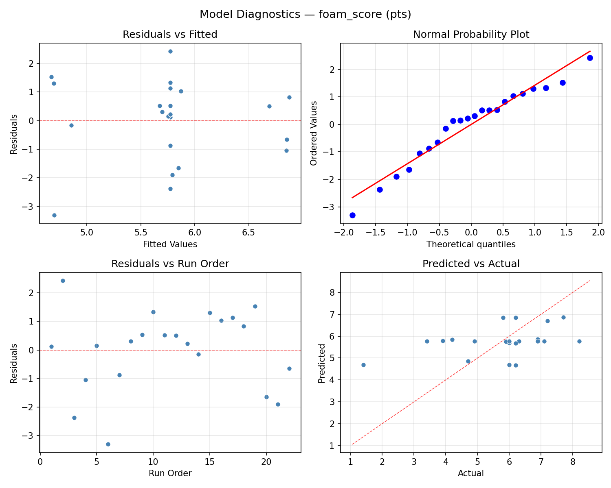
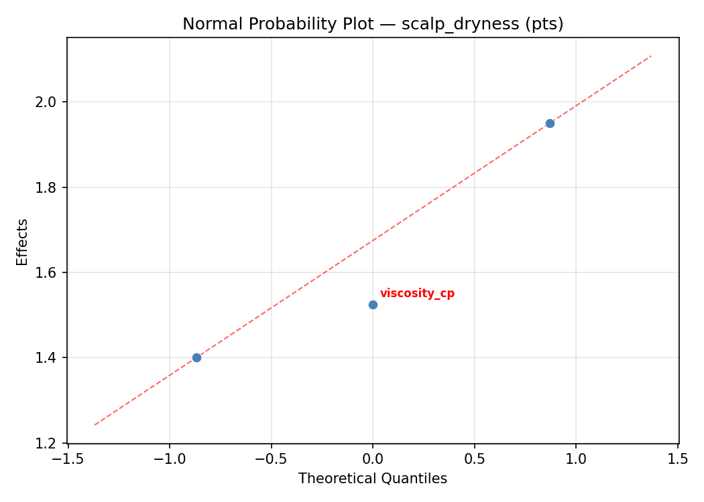

Summary
This experiment investigates shampoo foaming & cleansing. Central composite design to maximize foam volume and cleansing power while minimizing scalp dryness by tuning surfactant blend, pH, and viscosity.
The design varies 3 factors: surfactant pct (%), ranging from 8 to 18, ph level (pH), ranging from 4.5 to 6.5, and viscosity cp (cP), ranging from 2000 to 8000. The goal is to optimize 2 responses: foam score (pts) (maximize) and scalp dryness (pts) (minimize). Fixed conditions held constant across all runs include fragrance = floral, preservative = phenoxyethanol.
A Central Composite Design (CCD) was selected to fit a full quadratic response surface model, including curvature and interaction effects. With 3 factors this produces 22 runs including center points and axial (star) points that extend beyond the factorial range.
Quadratic response surface models were fitted to capture potential curvature and factor interactions. The RSM contour plots below visualize how pairs of factors jointly affect each response.
Key Findings
For foam score, the most influential factors were viscosity cp (54.0%), surfactant pct (31.6%), ph level (14.4%). The best observed value was 8.2 (at surfactant pct = 22.1287, ph level = 5.5, viscosity cp = 5000).
For scalp dryness, the most influential factors were surfactant pct (45.9%), viscosity cp (37.7%), ph level (16.4%). The best observed value was 2.8 (at surfactant pct = 8, ph level = 6.5, viscosity cp = 2000).
Recommended Next Steps
- Run confirmation experiments at the predicted optimal settings to validate the model.
- Consider whether any fixed factors should be varied in a future study.
Experimental Setup
Factors
| Factor | Low | High | Unit |
|---|
surfactant_pct | 8 | 18 | % |
ph_level | 4.5 | 6.5 | pH |
viscosity_cp | 2000 | 8000 | cP |
Fixed: fragrance = floral, preservative = phenoxyethanol
Responses
| Response | Direction | Unit |
|---|
foam_score | ↑ maximize | pts |
scalp_dryness | ↓ minimize | pts |
Configuration
{
"metadata": {
"name": "Shampoo Foaming & Cleansing",
"description": "Central composite design to maximize foam volume and cleansing power while minimizing scalp dryness by tuning surfactant blend, pH, and viscosity"
},
"factors": [
{
"name": "surfactant_pct",
"levels": [
"8",
"18"
],
"type": "continuous",
"unit": "%"
},
{
"name": "ph_level",
"levels": [
"4.5",
"6.5"
],
"type": "continuous",
"unit": "pH"
},
{
"name": "viscosity_cp",
"levels": [
"2000",
"8000"
],
"type": "continuous",
"unit": "cP"
}
],
"fixed_factors": {
"fragrance": "floral",
"preservative": "phenoxyethanol"
},
"responses": [
{
"name": "foam_score",
"optimize": "maximize",
"unit": "pts"
},
{
"name": "scalp_dryness",
"optimize": "minimize",
"unit": "pts"
}
],
"settings": {
"operation": "central_composite",
"test_script": "use_cases/220_shampoo_foam/sim.sh"
}
}
Experimental Matrix
The Central Composite Design produces 22 runs. Each row is one experiment with specific factor settings.
| Run | surfactant_pct | ph_level | viscosity_cp |
|---|
| 1 | 13 | 5.5 | 5000 |
| 2 | 18 | 4.5 | 8000 |
| 3 | 8 | 6.5 | 2000 |
| 4 | 13 | 7.32574 | 5000 |
| 5 | 13 | 5.5 | 5000 |
| 6 | 3.87129 | 5.5 | 5000 |
| 7 | 13 | 5.5 | -477.226 |
| 8 | 13 | 5.5 | 5000 |
| 9 | 18 | 6.5 | 2000 |
| 10 | 22.1287 | 5.5 | 5000 |
| 11 | 13 | 5.5 | 5000 |
| 12 | 13 | 3.67426 | 5000 |
| 13 | 13 | 5.5 | 5000 |
| 14 | 8 | 4.5 | 8000 |
| 15 | 13 | 5.5 | 5000 |
| 16 | 18 | 4.5 | 2000 |
| 17 | 13 | 5.5 | 10477.2 |
| 18 | 18 | 6.5 | 8000 |
| 19 | 13 | 5.5 | 5000 |
| 20 | 8 | 4.5 | 2000 |
| 21 | 8 | 6.5 | 8000 |
| 22 | 13 | 5.5 | 5000 |
Step-by-Step Workflow
1
Preview the design
$ python doe.py info --config use_cases/220_shampoo_foam/config.json
2
Generate the runner script
$ python doe.py generate --config use_cases/220_shampoo_foam/config.json \
--output use_cases/220_shampoo_foam/results/run.sh --seed 42
3
Execute the experiments
$ bash use_cases/220_shampoo_foam/results/run.sh
4
Analyze results
$ python doe.py analyze --config use_cases/220_shampoo_foam/config.json
5
Get optimization recommendations
$ python doe.py optimize --config use_cases/220_shampoo_foam/config.json
6
Multi-objective optimization
With 2 competing responses, use --multi to find the best compromise via Derringer–Suich desirability.
$ python doe.py optimize --config use_cases/220_shampoo_foam/config.json --multi
7
Generate the HTML report
$ python doe.py report --config use_cases/220_shampoo_foam/config.json \
--output use_cases/220_shampoo_foam/results/report.html
Features Exercised
| Feature | Value |
|---|
| Design type | central_composite |
| Factor types | continuous (all 3) |
| Arg style | double-dash |
| Responses | 2 (foam_score ↑, scalp_dryness ↓) |
| Total runs | 22 |
Analysis Results
Generated from actual experiment runs using the DOE Helper Tool.
Response: foam_score
Top factors: viscosity_cp (54.0%), surfactant_pct (31.6%), ph_level (14.4%).
ANOVA
| Source | DF | SS | MS | F | p-value |
|---|
| Source | DF | SS | MS | F | p-value |
| surfactant_pct | 4 | 7.8311 | 1.9578 | 0.560 | 0.6975 |
| ph_level | 4 | 1.7661 | 0.4415 | 0.126 | 0.9691 |
| viscosity_cp | 4 | 8.8770 | 2.2192 | 0.635 | 0.6502 |
| Lack | of | Fit | 2 | 6.6694 | 3.3347 |
| Pure | Error | 7 | 24.4600 | | |
| Error | 9 | 31.1294 | 3.4943 | | |
| Total | 21 | 49.6036 | 2.3621 | | |
Pareto Chart

Main Effects Plot

Normal Probability Plot of Effects

Half-Normal Plot of Effects

Model Diagnostics

Response: scalp_dryness
Top factors: surfactant_pct (45.9%), viscosity_cp (37.7%), ph_level (16.4%).
ANOVA
| Source | DF | SS | MS | F | p-value |
|---|
| Source | DF | SS | MS | F | p-value |
| surfactant_pct | 4 | 7.6508 | 1.9127 | 2.975 | 0.0804 |
| ph_level | 4 | 2.0483 | 0.5121 | 0.797 | 0.5565 |
| viscosity_cp | 4 | 5.4958 | 1.3740 | 2.137 | 0.1581 |
| Lack | of | Fit | 2 | 2.0450 | 1.0225 |
| Pure | Error | 7 | 4.5000 | | |
| Error | 9 | 6.5450 | 0.6429 | | |
| Total | 21 | 21.7400 | 1.0352 | | |
Pareto Chart

Main Effects Plot

Normal Probability Plot of Effects

Half-Normal Plot of Effects

Model Diagnostics

Response Surface Plots
3D surfaces fitted with quadratic RSM. Red dots are observed data points.
foam score ph level vs viscosity cp

foam score surfactant pct vs ph level

foam score surfactant pct vs viscosity cp

scalp dryness ph level vs viscosity cp

scalp dryness surfactant pct vs ph level

scalp dryness surfactant pct vs viscosity cp

Multi-Objective Optimization
When responses compete, Derringer–Suich desirability finds the best compromise.
Each response is scaled to a 0–1 desirability, then combined via a weighted geometric mean.
Overall Desirability
D = 0.7703
Per-Response Desirability
| Response | Weight | Desirability | Predicted | Dir |
|---|
foam_score |
1.5 |
|
6.90 0.7807 6.90 pts |
↑ |
scalp_dryness |
1.0 |
|
3.70 0.7550 3.70 pts |
↓ |
Recommended Settings
| Factor | Value |
|---|
surfactant_pct | 13 % |
ph_level | 5.5 pH |
viscosity_cp | -477.226 cP |
Source: from observed run #17
Trade-off Summary
Sacrifice = how much worse than single-objective best.
| Response | Predicted | Best Observed | Sacrifice |
|---|
scalp_dryness | 3.70 | 2.80 | +0.90 |
Top 3 Runs by Desirability
| Run | D | Factor Settings |
|---|
| #15 | 0.6885 | surfactant_pct=18, ph_level=6.5, viscosity_cp=2000 |
| #18 | 0.6864 | surfactant_pct=13, ph_level=5.5, viscosity_cp=5000 |
Model Quality
| Response | R² | Type |
|---|
scalp_dryness | 0.1702 | linear |
Full Multi-Objective Output
============================================================
MULTI-OBJECTIVE OPTIMIZATION
Method: Derringer-Suich Desirability Function
============================================================
Overall desirability: D = 0.7703
Response Weight Desirability Predicted Direction
---------------------------------------------------------------------
foam_score 1.5 0.7807 6.90 pts ↑
scalp_dryness 1.0 0.7550 3.70 pts ↓
Recommended settings:
surfactant_pct = 13 %
ph_level = 5.5 pH
viscosity_cp = -477.226 cP
(from observed run #17)
Trade-off summary:
foam_score: 6.90 (best observed: 8.20, sacrifice: +1.30)
scalp_dryness: 3.70 (best observed: 2.80, sacrifice: +0.90)
Model quality:
foam_score: R² = 0.5668 (quadratic)
scalp_dryness: R² = 0.1702 (linear)
Top 3 observed runs by overall desirability:
1. Run #17 (D=0.7703): surfactant_pct=13, ph_level=5.5, viscosity_cp=-477.226
2. Run #15 (D=0.6885): surfactant_pct=18, ph_level=6.5, viscosity_cp=2000
3. Run #18 (D=0.6864): surfactant_pct=13, ph_level=5.5, viscosity_cp=5000
Full Analysis Output
=== Main Effects: foam_score ===
Factor Effect Std Error % Contribution
--------------------------------------------------------------
viscosity_cp 2.8167 0.3277 54.0%
surfactant_pct 1.6500 0.3277 31.6%
ph_level 0.7500 0.3277 14.4%
=== ANOVA Table: foam_score ===
Source DF SS MS F p-value
-----------------------------------------------------------------------------
surfactant_pct 4 7.8311 1.9578 0.560 0.6975
ph_level 4 1.7661 0.4415 0.126 0.9691
viscosity_cp 4 8.8770 2.2192 0.635 0.6502
Lack of Fit 2 6.6694 3.3347 0.954 0.4300
Pure Error 7 24.4600 3.4943
Error 9 31.1294 3.4943
Total 21 49.6036 2.3621
=== Summary Statistics: foam_score ===
surfactant_pct:
Level N Mean Std Min Max
------------------------------------------------------------
13 12 5.4750 1.7792 1.4000 8.2000
18 4 6.8000 0.7348 6.2000 7.7000
22.1287 1 6.9000 0.0000 6.9000 6.9000
3.87129 1 6.2000 0.0000 6.2000 6.2000
8 4 5.2500 1.3329 4.2000 7.2000
ph_level:
Level N Mean Std Min Max
------------------------------------------------------------
3.67426 1 5.9000 0.0000 5.9000 5.9000
4.5 4 5.7250 1.1325 4.7000 7.1000
5.5 12 5.5750 1.8291 1.4000 8.2000
6.5 4 6.3250 1.5478 4.2000 7.7000
7.32574 1 6.0000 0.0000 6.0000 6.0000
viscosity_cp:
Level N Mean Std Min Max
------------------------------------------------------------
-477.226 1 6.0000 0.0000 6.0000 6.0000
10477.2 1 8.2000 0.0000 8.2000 8.2000
2000 4 6.3000 1.1576 4.7000 7.2000
5000 12 5.3833 1.6398 1.4000 6.9000
8000 4 5.7500 1.5416 4.2000 7.7000
=== Main Effects: scalp_dryness ===
Factor Effect Std Error % Contribution
--------------------------------------------------------------
surfactant_pct 2.3083 0.2169 45.9%
viscosity_cp 1.9000 0.2169 37.7%
ph_level 0.8250 0.2169 16.4%
=== ANOVA Table: scalp_dryness ===
Source DF SS MS F p-value
-----------------------------------------------------------------------------
surfactant_pct 4 7.6508 1.9127 2.975 0.0804
ph_level 4 2.0483 0.5121 0.797 0.5565
viscosity_cp 4 5.4958 1.3740 2.137 0.1581
Lack of Fit 2 2.0450 1.0225 1.591 0.2695
Pure Error 7 4.5000 0.6429
Error 9 6.5450 0.6429
Total 21 21.7400 1.0352
=== Summary Statistics: scalp_dryness ===
surfactant_pct:
Level N Mean Std Min Max
------------------------------------------------------------
13 12 3.9917 0.8681 2.8000 5.8000
18 4 5.1000 1.2517 4.2000 6.9000
22.1287 1 6.3000 0.0000 6.3000 6.3000
3.87129 1 4.2000 0.0000 4.2000 4.2000
8 4 4.5000 0.6055 3.9000 5.3000
ph_level:
Level N Mean Std Min Max
------------------------------------------------------------
3.67426 1 4.2000 0.0000 4.2000 4.2000
4.5 4 4.8250 1.3937 3.9000 6.9000
5.5 12 4.1833 1.0945 2.8000 6.3000
6.5 4 4.7750 0.4787 4.2000 5.3000
7.32574 1 4.0000 0.0000 4.0000 4.0000
viscosity_cp:
Level N Mean Std Min Max
------------------------------------------------------------
-477.226 1 3.9000 0.0000 3.9000 3.9000
10477.2 1 5.8000 0.0000 5.8000 5.8000
2000 4 5.0750 1.3574 3.9000 6.9000
5000 12 4.0583 0.9690 2.8000 6.3000
8000 4 4.5250 0.3594 4.2000 5.0000
Optimization Recommendations
=== Optimization: foam_score ===
Direction: maximize
Best observed run: #2
surfactant_pct = 22.1287
ph_level = 5.5
viscosity_cp = 5000
Value: 8.2
RSM Model (linear, R² = 0.3717, Adj R² = 0.2670):
Coefficients:
intercept +5.7727
surfactant_pct +0.9488
ph_level -0.5724
viscosity_cp -0.1716
RSM Model (quadratic, R² = 0.5610, Adj R² = 0.2318):
Coefficients:
intercept +6.0135
surfactant_pct +0.9488
ph_level -0.5724
viscosity_cp -0.1716
surfactant_pct*ph_level +0.3875
surfactant_pct*viscosity_cp -0.2875
ph_level*viscosity_cp +0.0125
surfactant_pct^2 -0.4954
ph_level^2 +0.2846
viscosity_cp^2 -0.1504
Curvature analysis:
surfactant_pct coef=-0.4954 concave (has a maximum)
ph_level coef=+0.2846 convex (has a minimum)
viscosity_cp coef=-0.1504 concave (has a maximum)
Notable interactions:
surfactant_pct*ph_level coef=+0.3875 (synergistic)
Predicted optimum (from linear model, at observed points):
surfactant_pct = 22.1287
ph_level = 5.5
viscosity_cp = 5000
Predicted value: 7.5049
Surface optimum (via L-BFGS-B, linear model):
surfactant_pct = 18
ph_level = 4.5
viscosity_cp = 2000
Predicted value: 7.4655
Model quality: Weak fit — consider adding center points or using a different design.
Factor importance:
1. surfactant_pct (effect: 6.8, contribution: 60.5%)
2. ph_level (effect: 3.3, contribution: 29.6%)
3. viscosity_cp (effect: 1.1, contribution: 9.9%)
=== Optimization: scalp_dryness ===
Direction: minimize
Best observed run: #3
surfactant_pct = 8
ph_level = 6.5
viscosity_cp = 2000
Value: 2.8
RSM Model (linear, R² = 0.0492, Adj R² = -0.1093):
Coefficients:
intercept +4.4000
surfactant_pct +0.2522
ph_level +0.0933
viscosity_cp +0.0240
RSM Model (quadratic, R² = 0.3400, Adj R² = -0.1549):
Coefficients:
intercept +4.6224
surfactant_pct +0.2522
ph_level +0.0933
viscosity_cp +0.0240
surfactant_pct*ph_level -0.1375
surfactant_pct*viscosity_cp -0.4625
ph_level*viscosity_cp +0.0875
surfactant_pct^2 -0.1812
ph_level^2 +0.2088
viscosity_cp^2 -0.3612
Curvature analysis:
viscosity_cp coef=-0.3612 concave (has a maximum)
ph_level coef=+0.2088 convex (has a minimum)
surfactant_pct coef=-0.1812 concave (has a maximum)
Notable interactions:
surfactant_pct*viscosity_cp coef=-0.4625 (antagonistic)
Predicted optimum (from linear model, at observed points):
surfactant_pct = 22.1287
ph_level = 5.5
viscosity_cp = 5000
Predicted value: 4.8605
Surface optimum (via L-BFGS-B, linear model):
surfactant_pct = 8
ph_level = 4.5
viscosity_cp = 2000
Predicted value: 4.0304
Model quality: Weak fit — consider adding center points or using a different design.
Factor importance:
1. ph_level (effect: 3.4, contribution: 49.0%)
2. surfactant_pct (effect: 2.3, contribution: 33.2%)
3. viscosity_cp (effect: 1.2, contribution: 17.8%)